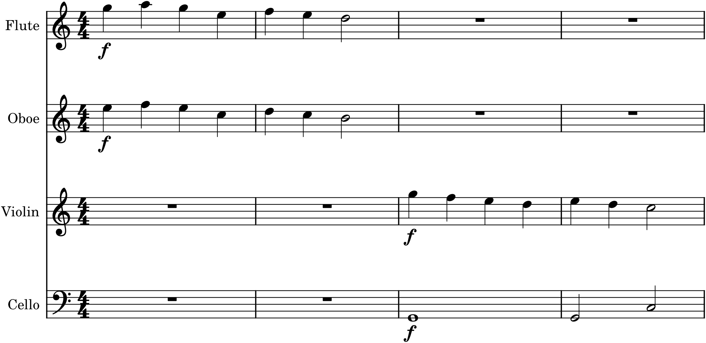

Every orchestrator who ever lived learned the craft the same way: by studying scores. Not by memorizing rules, but by opening the music of the masters and looking closely at how it is made — which instrument has the melody, how the harmony is spread, when the colour changes and why. This is the oldest and best orchestration lesson there is, and it is now easier than ever, because the entire public-domain repertoire — every symphony and concerto whose copyright has expired — is freely available to read and to hear. This chapter is about how to read a real score, what to look for, and how to steal what you find, well.
39.1Why read scores
You cannot invent orchestration from first principles; there is too much accumulated craft, too many solutions that someone already found. The masters spent lifetimes discovering how to make an orchestra sound clear, rich, and expressive, and they wrote those solutions down in their scores for anyone to read. Studying scores lets you learn directly from them — to see a problem you have (how do I make a melody sing over a busy accompaniment? how do I get a warm, dark colour?) already solved on the page. Every composer you admire did exactly this, copying out and analyzing the scores of those before them. It is not cheating; it is the tradition, and it is how the craft is passed on.
39.2How to read a full score
A full score looks forbidding — many staves stacked on each system — but it is read by a few simple conventions. The instruments appear top to bottom in families: woodwinds at the top, then brass, then percussion, then strings at the bottom, and within each family from highest to lowest. A single vertical slice down the page is one moment of music, everyone playing at once. Two cautions make the reading accurate: the transposing instruments (Chapter 32) sound at a different pitch than written, so a clarinet part read literally will mislead you until you transpose it in your head or trust a concert-pitch edition; and instruments that are resting simply have empty bars, so at any moment only some of the staves are active. Read a score by scanning down each moment to hear the whole texture, and across each staff to follow one instrument’s line.
39.3What to look for
Reading is only useful if you know what questions to ask. A handful of them will teach you most of what a score has to offer:
- Who has the melody? Find the main line at each moment and see which instrument (or instruments) carries it — and notice when it is handed to a new colour.
- What is the texture? Melody-and-accompaniment, homophonic block, counterpoint, unison, or layered (Chapter 36)? See how the composer deploys and changes it.
- How is it balanced? Note the dynamics, the doublings, the registers — how the important line is kept in front (Chapter 37).
- What is doubled, and with what? Look for lines shared between instruments and ask what the doubling is for — strength, or a blended colour (Chapter 34).
- How is the harmony spaced? See how chords are voiced across the instruments — open at the bottom, the bass low and alone.
- When does the colour change, and why? Mark where a new instrument enters or a passage is reorchestrated, and connect it to the form (Chapter 35).
Ask these of any page and the score stops being a wall of notes and becomes a set of decisions you can understand — and reuse.
39.4A device worth stealing
Here is the kind of thing reading reveals: a simple, reusable device you can lift straight into your own music. This one is antiphony — the “call and response” of one group of instruments answered by another.

The antiphony in Figure 39.1 is exactly the sort of concrete, portable idea that reading scores gives you: not an abstract principle but a move — winds call, strings answer — that you can recognize on the page, understand in a moment, and use yourself. The repertoire is full of such devices: a melody handed from oboe to violin, a pizzicato bass under a wind tune, a string tremolo shimmering beneath a brass chorale, a sudden unison after a rich texture. Collect them as you read.
39.5How to steal well
“Steal” is the traditional, only half-joking word for it, but there is a right way and a wrong way. The wrong way is to copy — to lift a passage note for note and paste it into your piece, which produces neither good music nor learning. The right way is to understand the principle and apply it to your own material: see how and why a device works, then use that understanding on your own melodies, harmonies, and forms. When you notice antiphony in a score, do not copy the notes; grasp the idea — one colour answered by another — and apply it to a phrase of your own. Steal the technique, not the tune. Done this way, studying scores does not make you derivative; it makes you fluent, giving you a growing vocabulary of orchestral moves that you deploy in your own voice.
39.6Building the habit
Make score-reading a permanent habit, not a one-time exercise. Public-domain scores are freely available online (the International Music Score Library Project, IMSLP, is the standard source; see Appendix D), and MuseScore itself hosts a large library of scores you can open, study, and play. The ideal practice is to read and listen at once: follow the score while the music plays, so that what you see on the page and what you hear in the air become the same thing — which is precisely the ear-and-eye connection this whole book has tried to build. Start with music for small forces (a string quartet, a chamber-orchestra movement) where the texture is easy to follow, and work outward. Every score you read this way makes you a better orchestrator, for the rest of your composing life.
In MuseScore
MuseScore is not only for writing scores but for reading them, and it adds the one thing paper cannot: playback synchronized to the page.
- Open scores to study from MuseScore’s online library (musescore.com) or import public-domain files (MusicXML or MIDI) from IMSLP — a vast free library of the repertoire.
- Read and hear at once: play the score and watch the cursor move through it, so you connect each notated moment to its sound — the fastest way to learn what an orchestration does.
- Toggle Concert Pitch to read transposing instruments (Chapter 32) at their sounding pitch while you study, so the harmony on the page is the harmony you hear.
- Solo and mute instruments (the Mixer, F10) to isolate a line — hear just the melody, just the accompaniment, just the winds — and understand how each layer contributes.
- Try a device yourself: having spotted antiphony (Figure 39.1) or any other move in a score, recreate the idea in a short passage of your own — winds calling, strings answering — and play it.
Try it: open any orchestral or chamber score in MuseScore, play it while following along, and answer the six questions of §39.3 for one passage — who has the melody, what the texture is, how it is balanced, what is doubled, how the harmony is spaced, and where the colour changes. Then find one device you like and rebuild it with your own material, as in Figure 39.1. You have just done what every orchestrator does daily; keep doing it, and you will never stop improving.